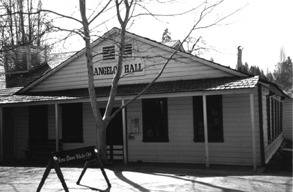
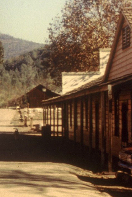

ANGELO'S HALL LOTS
1853-Today

© Floyd D. P. Øydegaard.
Angelo's Hall - 2001

The current structure (Angelo's Hall) is on lots 14, the east half, and 13, the west half. Ever since the 1960's the folk operating the restaurant in front have shared control of the Hall with the state for special events.
EAST LOT (#14)
1856 Hoerchner puts up a brick building.
1857 October - Hoerchner sells to Charles Joseph for $1395. Joseph has a shoe business.
1859 Turner's shoe shop occupies the building.
1863 November - Charles Joseph reopens his business.
1864 December - Joseph sells to P. A. Campbell for $205. He moves his bakery into the building. A little later he purchases a lot and frame building east of his lot, forming lot 14.
1871 August - Campbell. Block 16, Lot 235 - Deputy County Surveyor map by John P. Dart
1880 By this time, James Schooler owns the building.
1882 April - after Schooler's death the lot is purchased by I. A. Mace.
1896 After Mace's death in September, the lot sells to William Seibert.
1920 The lot sells to the Native Sons of the Golden West.
East part of East lot 14
Originally taken up by John Esaw and company and occupied by their Chinese restaurant.
1853 February - the sheriff sells the property to George Kowgun for $237.
1854 George Kowgun, running a Chinese boarding house, transfers the property to Isaac Shotwell.
1854 July - the building burns and is replaced with another frame structure . It sells to Morris Michael on July 31.
1855 Michael sells the west part of the lot to John and Philip Fauble, butchers.
west part of the east lot 14.
1858 September - the Faubles sell to Jacob Smith who opens the Miners' Market in the building. A month later he changes the name to the Washington Market.
1859 June - Smith sells the lot to R. Field.
1859 July - Michael Rosenfield's Jenny Lind restaurant is advertising in the building.
1861 September - Adolph Alisky advertises a business in the building.
1865 January - Rosenfield sells the frame building and lot to P. A. Campbell.
1880 This property belongs to James Schooler.
1881 Acquired by I. A. Mace after Schooler's death.
1896 Sells to William Siebert.
1920 Becomes property of Native Sons.
Now for the east half
1856 On the same day Rosenfield sold the west half, he sold the east half to Isaac Levy.
1856 June - the business was Swain's Old Established Seed Store.
1856 October - a furniture store was in residence.
1857 December - leases to Seymour Hughes.
1859 October 13 - Cornelia M. Towle, wife of Robert Towle, opens a book and stationery store as a Sole Trader, declaring her right under the law of April 12th, 1852, using her own money of $5000 for "buying and selling Books, Stationery and Merchandise." - Recorded (this date) by request of Robert Towle.
1861 Isaac Levy sells to his brother Joel who joins the lot with the corner lot.
WEST LOT (#13)
First appears to be owned by Joshua H. Sykes and was 30 feet wide by 120 feet deep.
1853 December - the lot sells to Phillip Schwenke and John Leisy (also spelled Liesy).
1854 June - Schwenke sells out to Leisy.
1855 May - Leisy sells the lot with 2 frame houses to Charles Julius Hoerchner.
1855 October - Hoerchner sells the south end of the lot to Michael Hildenbrand. Hoerchner's lot is now 88 feet deep.
1855 December - Hoerchner has completed a one story brick building on the west part of the lot which houses his boot and shoe business. The east part is a wooden building occupied by E. Seidel as a shooting gallery.
1857 October - Hoerchner sells the brick building to John Leisy for $1275. Four days later Leisy sells to Ignace Christen for $1325. Christen moves his paint and paper hanging store into the building.
1867 After journeying to the Fraser River and returning, there is no further mention of Christen's business in the building after this date.
1871 August - Christien. Block 16, Lot 234 - Deputy County Surveyor map by John P. Dart
1871 August - Campbell. Block 16, Lot 235 - Deputy County Surveyor map by John P. Dart
1871-72 Sometime after this date the lot sells.
1878 November - Charles Koch owns the lot and tears down the brick building in preparation for mining the lot. He sells the brick and iron doors.
1881 Henry Kluber acquires the lot by this date, sold in May to Henry Kruse who in turn sells to William Henkelman. He puts up a frame building into which he moves a saloon with reading and lounging room.
1897 The property sells to William Seibert.
1920 Mrs. Seibert sells the property to the Native Sons of the Golden West, the building
had burned.
1948 February - the state purchases the building from Pete and Barbara Nadotti for $7,000. That price includes the Columbia House.

State Street looks bare in this c1970s image of the Angelo's Hall on the far right.
2006 Forever Resorts assumes control of the Hall.
2008 Winter - State of California and Forever Resorts renovate Angelo's Hall; replacing roof structure, peers, reinforcing wall supports, improving the toilets, doors and ADA accessibilty.
2009 June 21 - Forever Resorts contract ends.
2010 May - Briggs Hospitality assumes control of the Hall from the state.
2012 June 1 - Steve and Doreen Kwasnicki are running the Angelo Concession.
2012 Dec 30 - Due to arson the Angelo is closed until it can be cleaned up.
2013 Angelo's is open for meetings and special events.
State Street
Columbia, CA 95310

This page is created for the benefit of the public by
Floyd D. P. Øydegaard
Email contact:
fdpoyde3 (at) Yahoo (dot) com
A WORK IN PROGRESS,
created for the visitors to the Columbia State Historic park.
© Columbia State Historic Park & Floyd D. P. Øydegaard.
{kind=link}